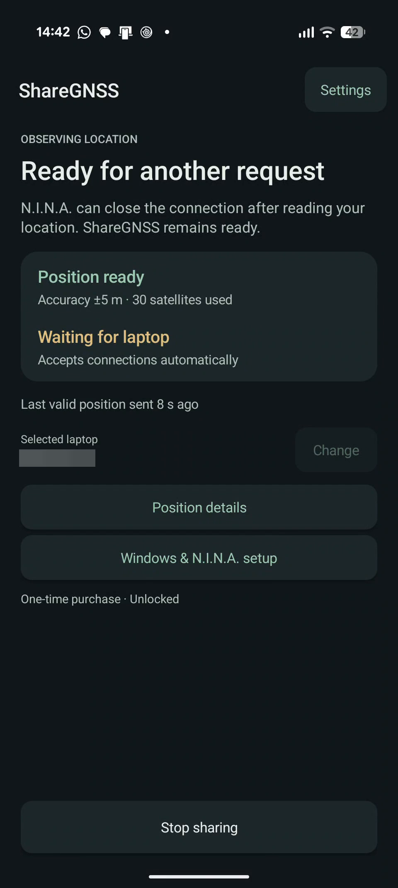

Android GNSS · Windows Bluetooth
Your observing location.
From phone to laptop.
Use your phone’s satellite position in N.I.N.A. ShareGNSS sends latitude, longitude, and sea-level altitude to your paired Windows laptop over Bluetooth.
Currently in testing. Contact us about testing.

Made for the observing site
A location check.
A familiar workflow.
Set your location when you arrive, confirm it in N.I.N.A., then get on with your session.
- 01 / FIND
Wait for a fresh satellite fix.
See satellite reception, position age, and reported accuracy. ShareGNSS doesn’t present stale, mock, or network-derived positions as fresh GNSS fixes.
- 02 / CONNECT
Use Windows’ Bluetooth serial port.
Pair once and select your laptop. Windows supplies the outgoing COM port; sharing doesn’t need a separate Windows app or N.I.N.A. plugin.
- 03 / IMPORT
Retrieve your observing location.
Use N.I.N.A.’s GNSS control, check the imported values, then stop sharing when you’re finished.
Check your setup.
Android 8 or newer, a phone with native NMEA GGA output, and Bluetooth Classic. Your Windows Bluetooth adapter needs Serial Port Profile support.
Try it in the field.
The 14-day trial starts after your first valid satellite position is sent. A one-time Google Play purchase unlocks continued sharing. There’s no subscription or automatic charge.
Your data
Your position goes to your selected laptop.
The app has no ShareGNSS account, advertising, analytics SDK, or saved location history. Your phone handles GNSS data locally and shares it with the paired laptop you choose.
Google Play handles purchases. This documentation site is hosted by GitHub Pages. Our privacy policy explains local settings, purchase records, support email, and website hosting.